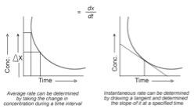
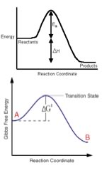
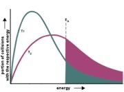

| Chapter 8.3: Activation energies and reaction kinetics |
The study of reaction rates is called chemical
kinetics, and encompasses a wide range of activities, measurements
and calculations. You might wonder why anyone would bother with this,
but it turns out that we can get more information about a reaction
from kinetic data than just how fast it goes - more importantly we
can get information about the pathway that the reaction takes from
reactants to products - the mechanism of the reaction. If you think
about a reaction in molecular terms, it seems clear that there must
be a continuous pathway between reactants and products. The reactants
do not suddenly disappear and then re-appear as products, and in
most reactions only one or two bonds are broken and formed as the
reaction proceeds. This pathway, what we call the mechanism, captures
the order in which bonds are broken and formed, and the intermediate
species involved. |
8.1 How for, how fast? |
However, since we cannot directly see what happens (at the molecular level) during a reaction, we have to rely on indirect methods to determine what is going on. Even using modern spectroscopic techniques, some species in reaction pathways may only be present for femto (10–15) or atto (10–18) seconds. Events on these time scales are very difficult to study, and in fact much of the current cutting edge research in chemistry and physics is directed at detecting and characterizing such ephemeral molecular level events. As we will see,information about how the reaction rate varies with concentration and temperature can give us fascinating chemical insights into reaction pathways. Concentrations and reaction rates As the probability of collisions between reactant molecules increases, the rate of reaction increases. In order to get information about the reaction mechanism we need to know the exact relationship between concentrations and rates. This can be done using a number of different techniques and experimental set-ups. But before we look at that we need to go over a few more terms. Recall that the rate of the reaction is the change in concentration of reactant per unit time. If the time interval is measurable (that is, real) the rate we get is called the average rate (over that time interval). If we imagine that the time interval drops to 0, we can get the instantaneous rate - which is the slope of the tangent to the concentration versus time curve at a given time (more calculus). The rate at the beginning of the reaction can be obtained by taking the tangent at the start of the reaction (t=0). This instantaneous rate is useful in many situations because as the reactants form products, the product can interfere with or inhibit the forward reaction. This is particularly true in biological systems, where a product may inhibit its own formation, for example by binding to a site on the enzyme that catalyzes the reaction. This type of interaction is common, and often inhibits the enzyme’s activity (a form of feedback regulation). |
| For example we could measure the initial rate for a reaction using different concentrations of reactants. Using an appropriate experimental design, we can figure out how the rate of the reaction varies with each reactant. For many common reactions, the relationship between the rate and the concentration is fairly straightforward. |  |
For example, in the reaction: (CH3)3CBr
+ –OH + Na+ ↔ (CH3)3COH + Br– +
Na+| Now, in contrast to the first order reaction of methyl
bromide and hydroxide, let us compare the reaction of methyl bromide
with hydroxide. There are a number of methods for determining the rate equation for a reaction; here we will consider just two. One method is known as the “method of initial rates”. The initial rate of the reaction is determined, for various different starting concentrations of reactants. Clearly, the experimental design is of paramount importance here. Let us say you are investigating our reaction A + B → 2AB. The rate may depend on [A] and/or [B], therefore the initial concentrations of [A] and [B] must be carefully controlled. If [A] is changed in a reaction trial, then [B] must be held constant, and vice versa (you cannot change both concentrations at the same time since you would not know how each one affects the rate). |
Question to answer:
Questions for later:
|
| Temperature and reaction rates Temperature is another important factor in determining reaction rate. This makes sense if you remember that the vast majority of reactions involve collisions and that the effects of collisions are influenced by how fast the colliding objects are moving. We know intuitively that heating tends to make things happen. For example if you want something to cook faster you heat it to a higher temperature (and cooking, it turns out, is just a series of chemical reactions). Why should this be so? We have already seen that many reactions are exothermic, that is they give off energy, and raise the temperature. The reaction of hydrogen and oxygen, discussed in chapter 7, is an excellent example of this phenomenon. The reaction itself is highly exothermic – explosive in fact - yet a mixture of hydrogen and oxygen is quite stable unless energy is supplied, either by heating or a spark of electricity. The same is true of wood and molecular oxygen. The question is: what is the initial “spark” of energy being used for? The answer lies with one of the principles that we have returned to over and over again: when atoms form bonds, the result is a more stable system (compared to the energy of unbonded atoms). But not all bonds are equally stable; some are more stable than others. Nevertheless, it always requires energy to disrupt a bond – any bond. If a reaction is to take place, then at least one of the bonds present in the reactants must be broken, a process that requires energy. If we imagine two reactants approaching each other, as the reaction starts to occur, the first thing that happens is that the bond being broken must start to break. It is the initial partial bond breaking step(s) that requires an input of energy from the molecule’s surroundings, and the amount of energy required and available will determine if the reaction occurs. If the amount of energy in the environment is not enough to begin the breaking of bonds in the reactants (and, for example in the burning of wood large amounts of energy are required for the initial bond breaking), then the reaction will not occur without an energy “push”. Wood does not just burst into flames (at least at standard temperatures) - and neither do humans. The burning wood reaction (i.e. wood + O2 ↔ H2O + CO2) does not occur under normal conditions, but as the temperature rises enough, the reaction will start. Once the reaction starts, however, the energy released from the formation of new bonds is sufficient to raise the local temperature and so lead to the breaking of more bonds, the formation of new ones and the release of more energy. As long as there is wood and oxygen available, the system will behave as a positive and self-sustaining feedback look. The reaction will stop if one of the reactants becomes used up or the temperature is lowered. You might well ask yourself, “how is it that water extinguishes a fire?” |
| It is the “activation energy” associated
with reactions that is responsible for the stability of our world. For
example, we live in an atmosphere of ~20% O2. There are many
molecules in our bodies and our environment that can react with O2.
If there were no energy barriers to combustion (i.e. reaction with O2),
we would burst into flames. Sadly, as Salem witches and others would
attest (if they could), raise the temperature and we do burn. And, once
we start burning, it is hard to stop the reaction. As we have said before,
combustion reactions are exothermic, once they have produced enough thermal
energy, the reaction d?oesn’t need that “spark” any more. But the requirement for that initial spark is why you need the addition of energy (such as provided by a detonator) for explosions to occur. If we plot energy versus the progress of the reaction we can get a picture of the energy changes that go on during the reaction. |
 |
(Remember the reaction coordinate (x-axis) is not time since, as we have seen, reactions are going backwards and forwards all the time.) For a simple one-step reaction as shown here, the highest point on the energy profile is called the transition state. It is not a stable entity and only exists on the timescale of molecular vibrations (femtoseconds). Now it is reasonably easy to understand how increasing temperature can increase the reaction rate - because it increases the average kinetic energy of the molecules in the environment. (As an aside, do you remember and understand that, even though individual molecules have different kinetic energies, all of the different populations of molecules in a system have the same average kinetic energy.) If we consider the effect of temperature on the distribution of kinetic energies (the Maxwell-Boltzman distribution), we see right away that at higher temperatures there are relatively more molecules with higher kinetic energy – it is collisions between these “high energy” molecules that provides the energy needed to overcome the activation energy barrier. This means that as the temperature rises, the probability of “productive” collisions occurring between particles per unit time increases, that is, the reaction rate will increase. At the same time, it is possible that raising the temperature will allow other reactions, perhaps reactions we have not been considering, to occur. This is particularly likely if we are dealing with complex mixtures of different types of molecules. |
The rate equation does not appear to contain a term for temperature, and typically we have to specify the temperature at which the rate was measured. But since the rate changes with temperature, it must be the rate constant that changes. Sure enough, it has been determined experimentally that the rate constant k ∝ e–Ea/RT (or substituting a constant k = A e–Ea/RT), where k is the rate constant, Ea is the activation energy, T is the temperature, and R is a constant. This is known as the Arrhenius equation, and you can see by inspection that k is directly proportional to the temperature, and indirectly proportional to the activation energy Ea (can you see that?) |
 |
The activation energy for a reaction also depends upon the type of reaction that is occurring. For example, a Brønsted-Lowry acid base reaction has a very low activation energy barrier. In these reactions the only thing that is happening is that a proton is being transferred from one electronegative element to another. |
As we mentioned before, this is quite
fortunate, since we are (basically) organized by chance and natural
selection, from collections of organic reactions. If these reactions
occurred spontaneously and rapidly, we would fall apart and approach
equilibrium (and equilibrium for living things means death!)
But you may have identified a potential problem, generally it
is not advisable to heat up a biological system, and we certainly
do need biological systems to undergo reactions. We would like
different reactions to proceed in different places and at different
rates. For this, biological systems (and many others) use a wide
range of catalysts. |
8.1
How for, how fast? |
Question to answer:
|
| 28-Jun-2012 |